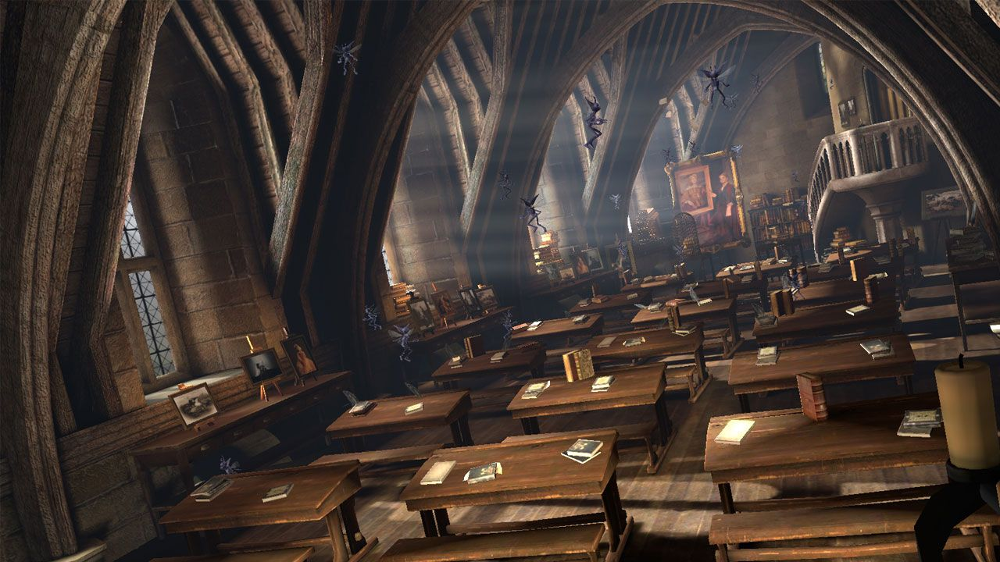
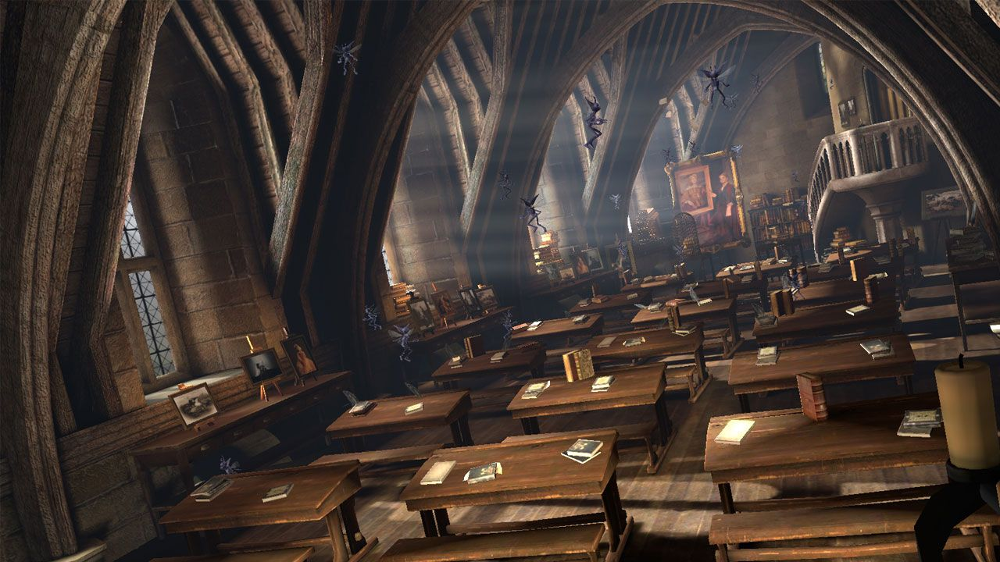

RAVENCLAW
A Brief Description of Ravenclaw
Ravenclaw is one of the four Houses of Hogwarts School of Witchcraft and Wizardry. Its founder was the medieval witch Rowena Ravenclaw. Members of this house are characterised by their wit, learning, and wisdom. The emblematic animal symbol is an eagle, and blue and bronze are its colours. The Head of Ravenclaw is Filius Flitwick and the house ghost is the Grey Lady, otherwise known as the daughter of Rowena Ravenclaw, Helena Ravenclaw.
Ravenclaw corresponds roughly to the element of air, and it is for that reason that the House colours were chosen; blue and bronze represent the sky and eagle feathers respectively, both having much to do with air. The Ravenclaw points hourglass contains blue sapphires.
Traits
Ravenclaw House prizes learning, wisdom, wit, and intellect in its members. Thus, many Ravenclaws tend to be academically motivated and talented students. They also pride themselves on being original in their ideas, and methods. It is not unusual to find Ravenclaw students practising especially different types of magic that other houses might shun. Hermione Granger, an extremely intelligent witch and the top student in her year, was sorted into Gryffindor, though she admitted that the Sorting Hat had seriously considered placing her in Ravenclaw.
Often hard-working and diligent, as often is the case with intellectuals with a predisposition for academics, some of the pupils sorted under the blue-bronzed eagle are known to be inclined to dismiss certain social expectations for the sake of satisfying their own intellectual curiosity. Some of these eventually also ended up being not only accepted but even celebrated, in spite of being initially subjected to scorn for their various oddities. Luna Lovegood, for example, was one such student: Eccentric to put it at its mildest, she was a Ravenclaw student who initially was bullied for her open defiance of conventionality, but ultimately became a celebrated wizarding naturalist and renowned for her participation in the legendary Battle of Hogwarts and past membership in Dumbledore's Army.
Reputation
According to Slytherin prefect Gemma Farley, Ravenclaws are so competitive when it comes to academic success that they are known to backstab each other, and likely other students, in order to get top marks. While Hufflepuff prefect Gabriel Truman noted that they are so proud of the success of famous members, such as Laverne de Montmorency, that they claim any intelligent wizard as a member of Ravenclaw House, such as Bridget Wenlock, who was, in fact, a Hufflepuff. Some Ravenclaws, such as Uric the Oddball, Xenophilius Lovegood, and his daughter Luna Lovegood are also noted to have a propensity towards eccentricity.
Ravenclaw House appears to have little rivalry with the other houses, except in Quidditch. Harry Potter believed that they tended to side with Gryffindor in its rivalry with Slytherin, as did Hufflepuff house. However, during the 1994 Triwizard Tournament, most Ravenclaws supported Hufflepuff Champion Cedric Diggory over Harry. They believed that Harry had, in fact, cheated his way into being a champion and that the true Hogwarts champion was Cedric. Many Ravenclaws (such as Cho Chang) joined Dumbledore's Army and fought in the Battle of Hogwarts along with Gryffindors and Hufflepuffs. They rose at almost the exact moment as the Hufflepuffs and turned their wands upon Pansy Parkinson and Slytherin House in Harry Potter's defence when the former wished to hand Harry over to Lord Voldemort and his army of Death Eaters.
Common Room
The Ravenclaw common room is in one of the castle's towers and is wide and circular. You have to climb a tight spiral staircase to get there. It has graceful arched windows, and the walls are hung with blue and bronze silks. The domed ceiling is painted with stars, which are echoed in the midnight-blue carpet. Tables, chairs, and bookcases cover the expanse of the floor, and a white marble statue of Rowena Ravenclaw sits next to the door that leads to the dormitories above. Harry Potter entered the common room in 1998 while searching for clues to the location of one of Voldemort's Horcruxes.
Unlike the other common rooms in the school, a logical riddle given by a bronze eagle-shaped knocker must be answered to enter. This could prove troublesome as anyone with enough intellect could intrude into the dormitory, as is shown in 1998 where Professor McGonagall had no trouble entering by answering the riddle correctly (though she was a "hatstall" between Gryffindor and Ravenclaw). On the other hand, a particularly poorly-phrased riddle might bemuse a particular student, blocking them from entering and forcing them to sleep outside. However, Hermione stated in her first year when figuring out the complicated riddle, beneath the trapdoor, that most wizards and witches do not have much sense of logic, which might be something that Ravenclaw noticed herself and decided to use clever riddles instead of passwords, as they are safer than some words.